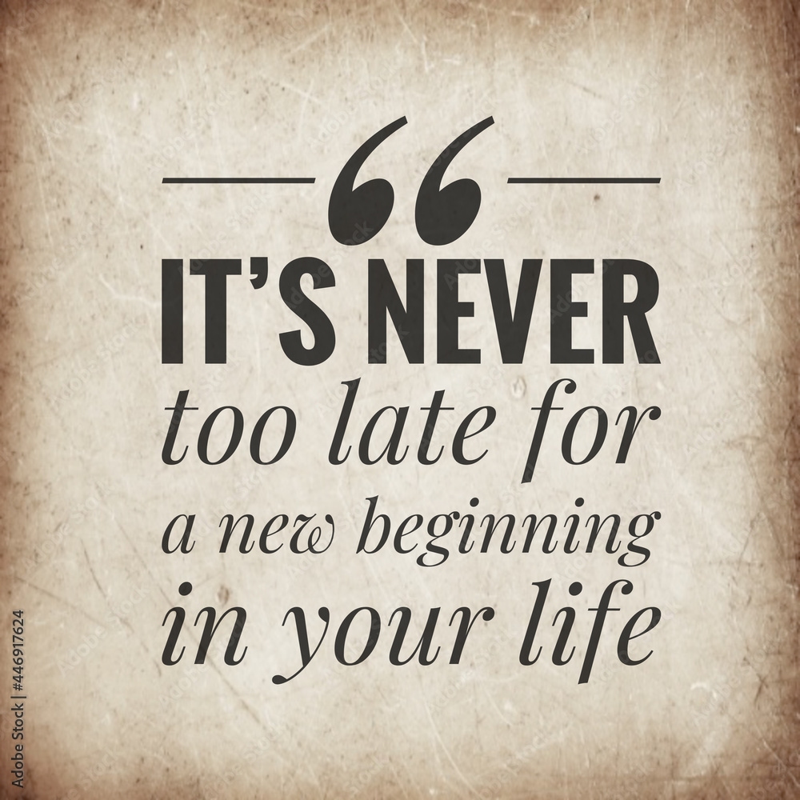
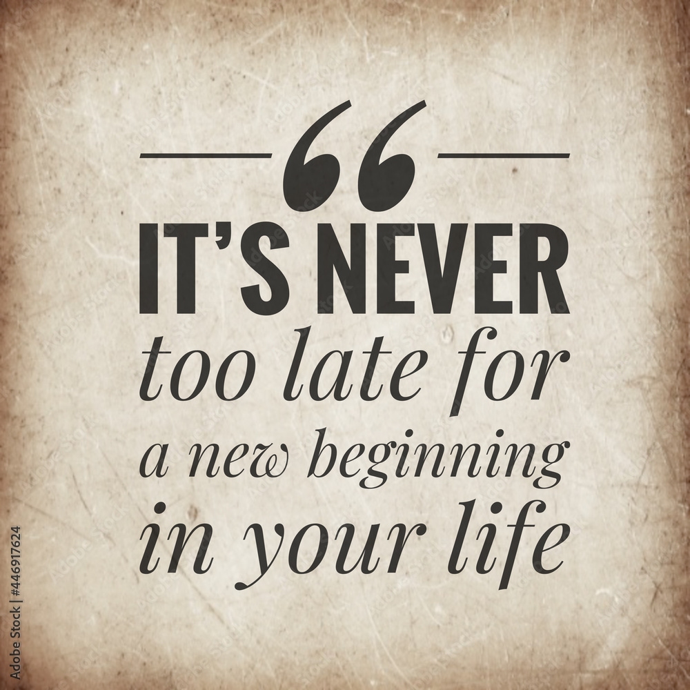
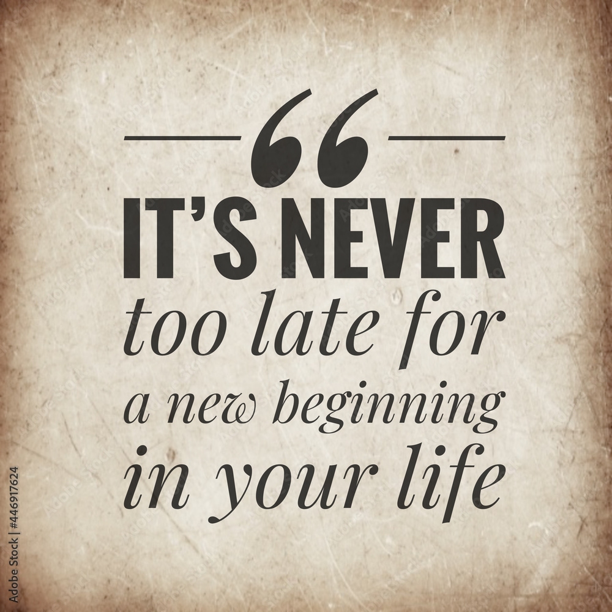

My strengths I am a very communicative person. I can easily find a way to connect with people.
My weakness: is that I am overthinking too much stuff. But I am working on myself and I believe that in some time I will be able to overcome my overthinking
How can you turn your strengths / weaknesses into opportunities? Thanks to my communicative skills I have friends that help distract myself from overthinking too much.
What obstacles do you face to succeed as a student? Could any of your weaknesses prevent you from succeeding in your studies / career? It can hold me back a bit but I am working on myself, and I can truly see a progress.
